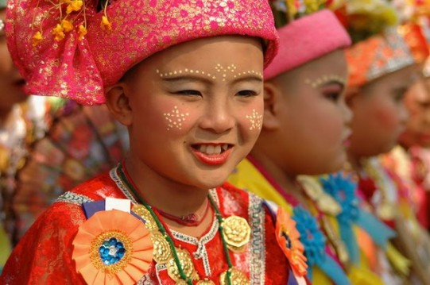
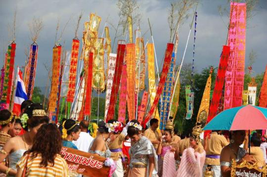

| ประเพณีปอยน้อย |
|---|
เป็นประเพณีบวช หรือการบรรพชาของชาวเหนือจะมีชื่อเรียกต่างกันในบางท้องถิ่น เช่น ปอยน้อย ปอย บวช ปอยลูกแก้ว ปอยส่างลอง นิยมจัดภายในเดือนกุมภาพันธ์หรือมีนาคม ซึ่งเก็บเกี่ยวพืชผลเสร็จแล้ว ใน พิธีบวชจะมีการจัดงานเฉลิมฉลองอย่างยิ่งใหญ่ มีการแห่งลูกแก้วหรือผู้บวชที่จะแต่งตัวอย่างสวยงามแบบ กษัตริย์หรือเจ้าชาย เพราะถือคตินิยมว่าเจ้าชายสิทธัตถะได้เสด็จออกบวชจนตรัสรู้ |
|  |
| ประเพณียี่เป็ง (วันเพ็ญเดือนยี่) หรืองานลอยกระทง |
โดยจะมีงาน “ตามผางผะติ้ป” (จุดประทีป) ซึ่งชาวภาคเหนือตอนล่างจะเรียกประเพณีนี้ว่า “พิธีจองเปรียง” หรือ “ลอยโขมด” เป็นงานที่ขึ้นชื่อที่จังหวัดสุโขทัย |
| ประเพณีลอยกระทงสายหรือประทีปพันดวง |
ที่จังหวัดตาก ในเทศกาลเดียวกันด้วยในเดือน 3 หรือประมาณเดือนธันวาคม มีประเพณีตั้งธรรมหลวง (เทศน์มหาชาติ) และทอดผ้าป่า ในธันวาคมจะมีการเกี่ยว “ข้าวดอ” (คือข้าวสุกก่อนข้าวปี) พอถึงข้างแรมจึงจะมีการเกี่ยว “ข้าวปี” |
| ประเพณีลอยโคม |
ชาวล้านนาจังหวัดเชียงใหม่ ที่มีความเชื่อในการปล่อย โคมลอยซึ่งทำด้วยกระดาษสาติดบนโครงไม้ไผ่แล้วจุดตะเกียงไฟตรงกลางเพื่อให้ไอความร้อนพาโคมลอยขึ้นไปในอากาศเป็นการปล่อยเคราะห์ปล่อยโศกและเรื่องร้ายๆ ต่างๆ ให้ไปพ้นจากตัว |
| ประเพณีตานตุง |
ในภาษาถิ่นล้านนา ตุง หมายถึง “ธง” จุดประสงค์ของการทำตุงในล้านนาก็คือ การทำถวายเป็นพุทธบูชา ชาวล้านนาถือว่าเป็นการทำบุญอุทิศให้แก่ผู้ที่ล่วงลับไปแล้ว หรือถวายเพื่อเป็นปัจจัยส่งกุศลให้แก่ตนไปในชาติหน้า ด้วยความเชื่อที่ว่า เมื่อตายไปแล้วก็จะได้เกาะยึดชายตุงขึ้นสวรรค์พ้นจากขุมนรก วันที่ถวายตุงนั้นนิยมกระทำในวันพญาวันซึ่งเป็นวันสุดท้ายของเทศกาลสงกรานต์ |
|  |
 |
 |